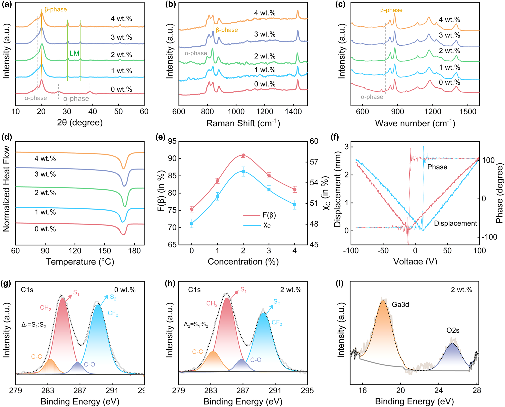
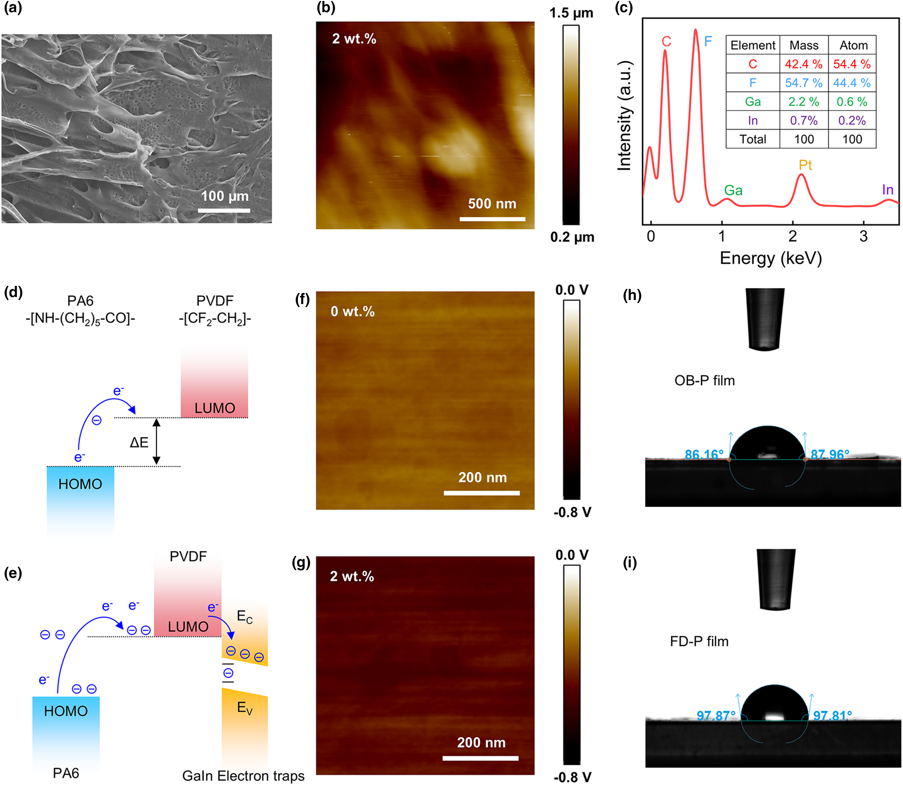
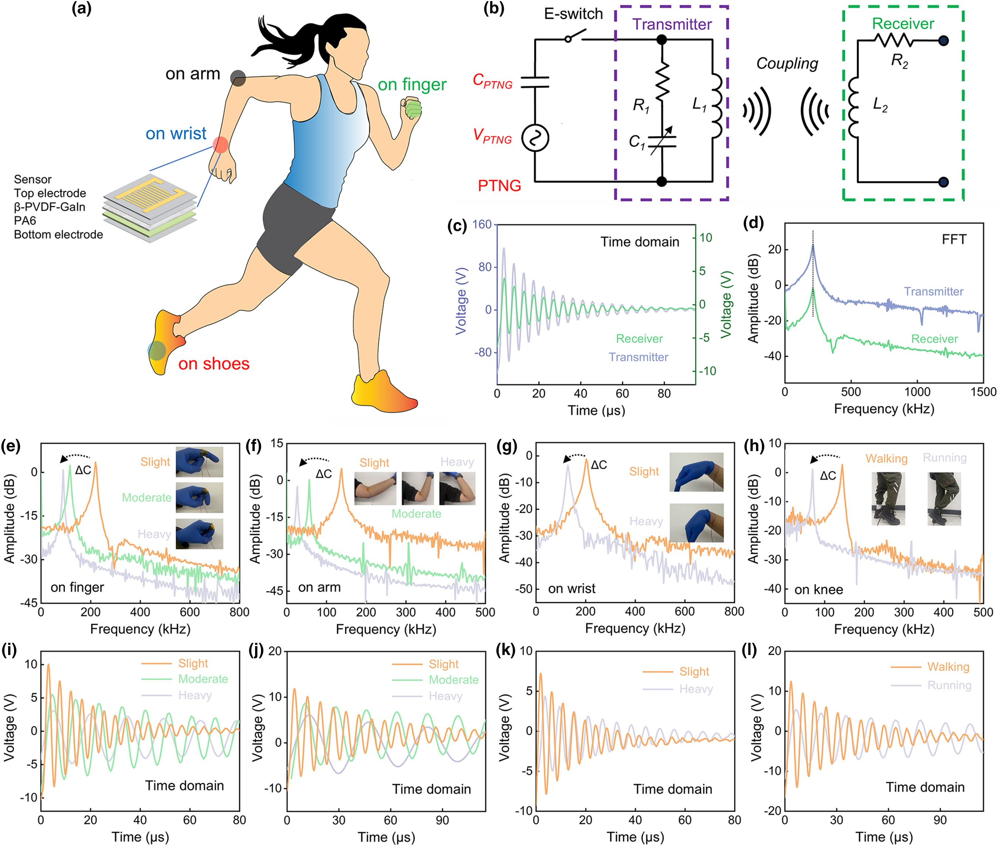

Soft-composite energy harvesting
Zhejiang University / Professor Jikui Luo / 23 June–1 August 2025
How do composition and processing affect the structure and electrical response of soft energy-harvesting materials?
During my placement, I worked on magnetoelastic energy harvesting, including GO-doped soft composites, materials characterisation and electromechanical testing. I developed practical skills in SEM, EDS, XRD and FTIR, examined current output and stability under cyclic bending, and used COMSOL to explore magnetic–mechanical interactions.
The placement also contributed to the coauthored GaIn/PVDF article below. The table connects my laboratory experience with the team’s published methods while distinguishing the magnetoelastic and piezoelectric–triboelectric work.
My work in the context of the publication
| Workstream | My placement account | Published context | Supported connection |
|---|---|---|---|
| Materials synthesis | I prepared soft composites and worked with GO doping. | The article uses GaIn/PVDF, freeze-drying and corona poling. | Both involved composite preparation, using different formulations. |
| Structural and chemical characterisation | I gained practical experience in SEM, EDS, XRD and FTIR. | XRD: Fig. 2a; FTIR: Fig. 2c; SEM: Fig. 3a; EDS: Fig. 3c. | The original published panels are reproduced below. |
| Electromechanical testing | I tested current output and stability under cyclic bending. | Device-output and cyclic-stability tests: Fig. 5. | Both examine electrical output and stability under repeated deformation. |
| Modelling | I used COMSOL to examine magnetic–mechanical interactions. | The article’s molecular interpretation uses MD and DFT. | My COMSOL work used a different approach from the article’s MD and DFT calculations. |
The table draws on my placement account and the article’s Experimental Section. The published experiments and simulations represent the author team’s collective work. Check the published methods
Figures from the coauthored publication
The figures below show the author team’s published evidence. They connect the laboratory methods to material structure, composition and device operation.



Processing and solution demonstrations
GaIn-Induced Polarization Control in PVDF for High-Efficiency Energy Harvesting and Instantaneous Wireless Sensing
Lu et al. / Energy & Environmental Materials 9(3), e70201 (2026). First published online 3 December 2025. Author record: Lifeng Xuan.
Read the publicationThe figures show the author team’s published results. The videos document laboratory activities during my placement.